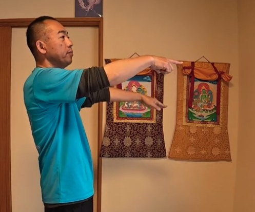
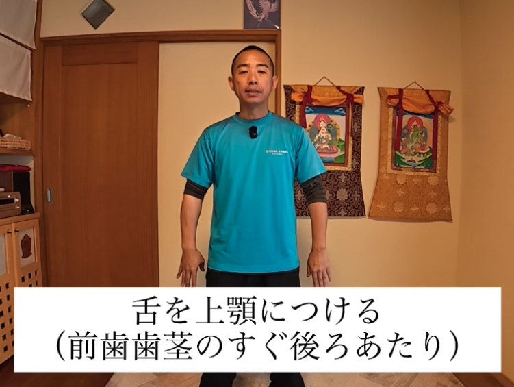
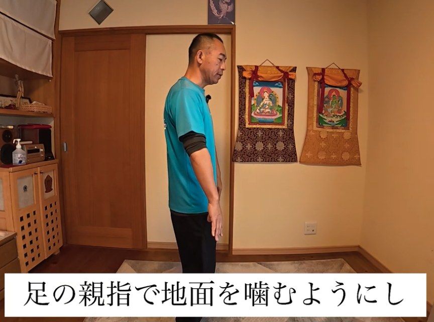
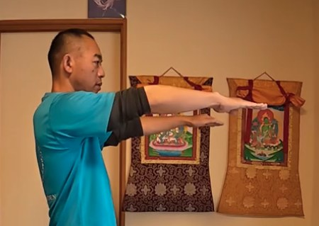
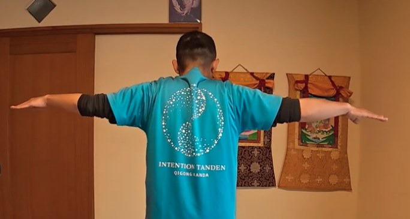
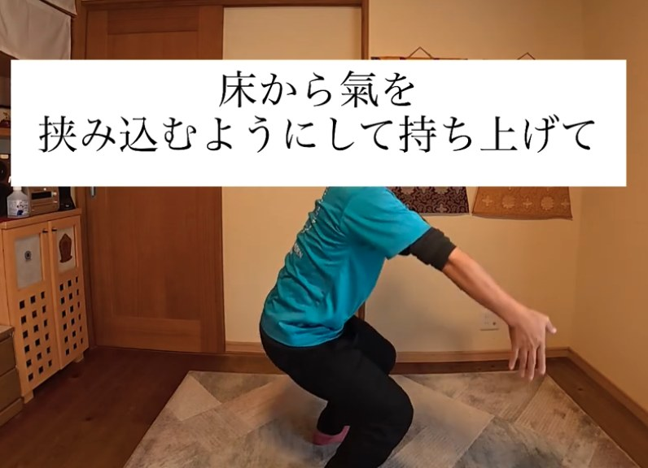
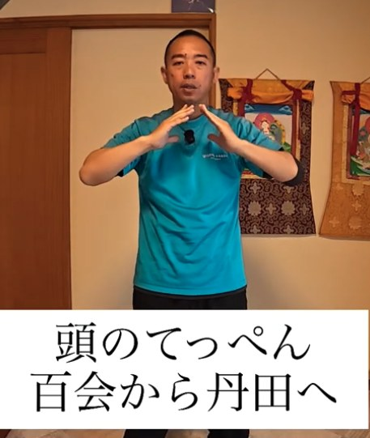
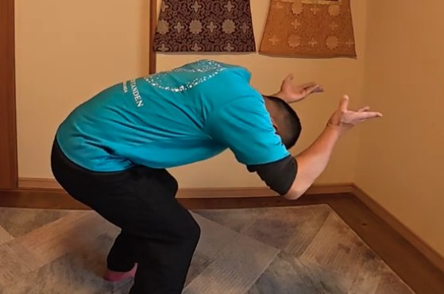
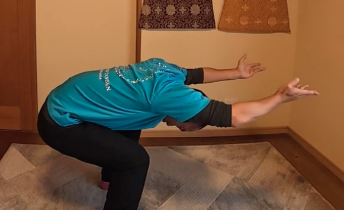
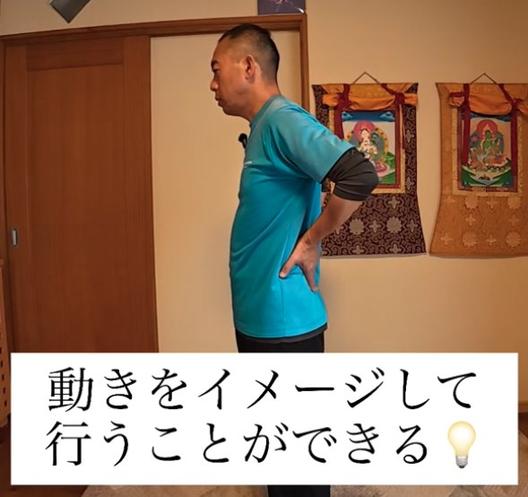

こんなこと、ありませんか？
- 補と瀉をやっても、氣の動きが「浅い」と感じる
- 氣を大きく動かすコツを知りたい
- 日常の中で、補と瀉を使ってみたい
- 意識を向けるのが、難しく感じる
そんなときは、意識する「距離」を変えてみると、感覚が変わることがあります。
応用編の考え方
指先から肩では、少し足りない。
だから「遠く」から
前回の補と瀉は、指先から肩までの氣の通り道でした。自分の体の中だけの動きなので、外の氣という要素が、少し浅くなります。
今回は、遠くの一点から丹田へ補、丹田から遠くへ瀉します。この距離の分だけ、氣の流れが大きくなります。
大切なのは、遠くの一点と、自分の丹田の二点を、しっかり意識すること。自分の体から外へ向かう意識は、少し難しくなります。だからこそ、この講座で練習します。
この講座で学ぶこと
6つのステップで、
氣を大きく動かしていきます
-
1
「遠くの一点」を決める
まずは、目線の先にある遠くの建物などを、一点決めます。イメージしにくいときは、家の壁や、家の奥の部屋でも大丈夫です。人によって意識しやすい距離が違うため、その見つけ方もお伝えします。

遠くの一点を決める -
2
準備の立ち方：足の親指で地面を噛む
導入がうまくいくと、その後の動きがスムーズになります。舌を上顎につけ、足の親指で地面を噛んで、湧泉（足裏のツボ）をひらきます。足は力を抜いた「虚」、上半身は動きのある「実」という考え方も学びます。

舌を上顎につける 
足の親指で地面を噛む -
3
遠くから丹田へ補、丹田から遠くへ瀉
指先を前に倒し、遠くの一点を定めて、「遠くから丹田に補」「丹田から遠くへ瀉」。続けて、両手を左右に開いても、意識は遠くに置いたままにします。補と瀉の感覚の違いも、体感していただけます。

指先を前に倒して遠くへ 
両手を左右に開く（後ろから） -
4
氣を収める
全身の邪氣を集めて遠くに捨て、床から氣を挟み込むように持ち上げて、頭のてっぺん（百会）から丹田へ下ろしていきます。形を覚えたら、目を閉じて行う「動静功」へ進みます。

床から氣を挟み込むように 
百会から丹田へ -
5
体の調子に合わせて使う
丹田の代わりに、気になる場所を置いて行う応用です。出すのは「邪氣」であること、背中を平らにする形の大切さなど、勘違いしやすいポイントも動画で確かめられます。

背中が丸まった状態 
背中を平らにした状態 -
6
イメージだけでも、景色からも
形を覚えたら、座ったままでも、イメージだけでも行えます。さらに、海や山、神社など、好きな場所から丹田へ補を入れる考え方もお話しします。意念の練習が、日常に広がります。

動きをイメージして行う
この講座の特長
「距離」と「意識の置き方」を、動画で確かめる
氣の流れを大きくする
遠くの一点を使うことで、指先から肩だけでは得られない、氣の流れの大きさを練習します。
うまくいかないときの手がかり
「遠くの一点が定まっていない」など、つまずきやすいポイントと、その見直し方もお伝えします。
日常に持ち帰れる
形を覚えれば、座ったままでも、イメージだけでも行えます。好きな景色や場所を使う工夫も紹介します。
どこからどこへ。
向かう先を、しっかり意識する。
講師
神田 一郎（かんだ いちろう）
富士山のふもとで、氣功を教えています。リハビリの現場での経験と、ご自身の体と向き合ってきた歩みを土台に、「なんでもOK、オールOK」の気持ちで、無理なく続けられる氣功をお伝えしています。
この講座でも、うまくできているかどうかを気にするより、まずは自分の体の小さな変化に気づくことを大切にしています。
講座の概要
- 講座名
- 氣功ビデオ講座 5月号「補と瀉 応用編（遠くから丹田へ）」
- 形式
- 動画講座（講師が実演しながら解説）
- 収録時間
- 約26分
- 内容
- 遠くの一点の決め方／準備の立ち方／遠くから丹田への補と瀉／氣の収め方／体の調子に合わせた使い方／景色や場所からの補
- 準備するもの
- 動画を見ながら立てる広さ
- 価格
- 8,800円（税込）
- 視聴方法
- Vimeo（お支払い完了後、いつでもご視聴いただけます）
- お支払い
- PayPal
氣功ビデオ講座シリーズ
段階を踏んで、少しずつ深めていく
月ごとに、内容がつながっていくシリーズです。5月号は、補と瀉を大きく広げる応用編です。
- 3月号氣功を始める第一歩（立ち方）詳細を見る
- 4月号補と瀉（腕の氣を通す訓練）詳細を見る
- 5月号補と瀉 応用編（遠くから丹田へ）この講座
- 6月号天地の氣と繋がるための準備
- 7月号天地を繋ぐ その2
- 8月号天地を繋ぐ その3
- 9月号意念と氣の法則と氣感
よくあるご質問
3月号・4月号を見ていなくても受講できますか？
受講できます。ただ、5月号は、立ち方（3月号）と、補と瀉の手の形（4月号）の上に、意識を重ねていく内容です。質を高めたい方は、3月号、4月号から順にご覧いただくのがおすすめです。
氣功が初めてでも大丈夫ですか？
はい。ただ、シリーズの応用編にあたるため、初めての方は3月号から始めるのがおすすめです。
準備するものはありますか？
動画を見ながら立てるスペースがあれば大丈夫です。
購入後は、どうやって視聴しますか？
お支払い完了後、いつでもVimeoでご視聴いただけます。
どんな効果がありますか？
体の感じ方には個人差があります。この講座は、体の使い方を学ぶ内容であり、医療行為や、病気の診断・治療を目的としたものではありません。体調に不安がある方は、無理をせず、医師にご相談ください。